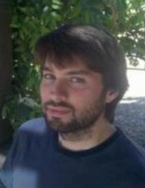

 There is an app on the market for iPhone and Android. "Thotly" is the brainchild of Geoffrey Abbott, a 2008 graduate of UVM's College of Engineering & Mathematical Sciences program and co-founder of mobile and social applications company AppZorz.
Thotly is unique, in that it doesn't require registration - just a download. The app is described on its website as an "anonymized local layer on your reality". It allows the user to leave "thots" anywhere and respond to others nearby. Conversations range from random thoughts and musings about personal situations, to commentary on recent events like the #occupy movement. Thotly users aren't writing to friends or followers, but rather leaving thots in geographic locations that anyone could find.
"The idea is to provide people a way to share thoughts and ideas in a local community without being tied to a particular identity. We thought it would be exciting to see where people take it", says Geoff.
While at UVM, Geoff majored in Mathematics with a minor in Computer Science. After graduation, he worked at IBM in Computational Lithography as a software engineer. During his time at IBM he was awarded a patent for his work on methods and algorithms for regional pattern density determination in semiconductors.
When Geoff left IBM, he and his three friends founded AppZorz in 2010. Together they created Thotly. Geoff's main role in the project was to develop Thotly for the Android platform.
To try the app, visit: http://www.thotly.com